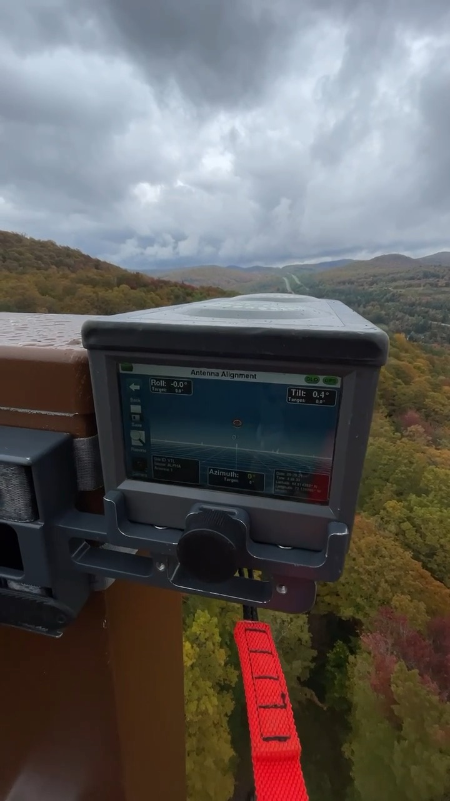
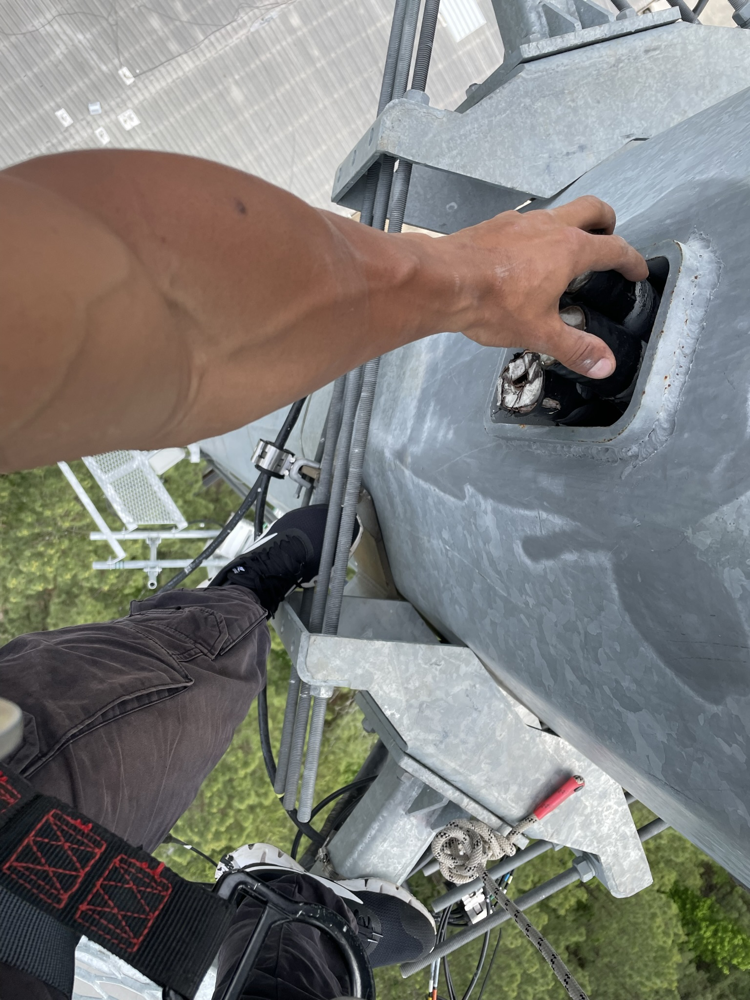
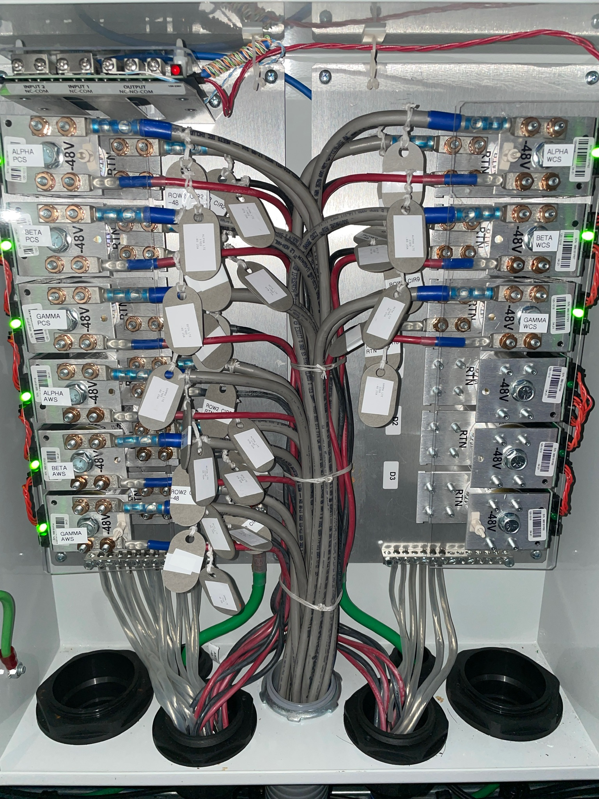
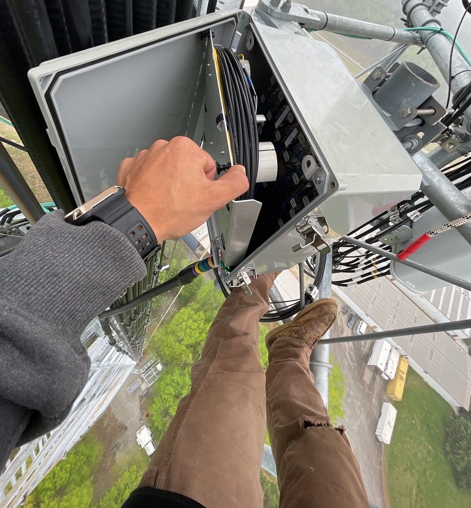

Tower technician and crew foreman, New England
I build
cell sites.
I work on cell sites: steel, shelters, power, fiber. Four-person crew, and I run it. Most days I plan the job, then climb up and do it.
Class A CDL history













What I do.
Up on the steel
- Structural steel. Towers, antenna mounts, platforms. I've put up new ones and modified old ones.
- Work at height. Climbing, rope access, fall protection, rescue training, aerial lifts.
- Heavy rigging. Advanced rigging qualifications, big-crane lifts, rigging plans, hoisting equipment.
- Wireless RF. Antennas, radios, RRUs, TMAs, coax, PIM testing, RF troubleshooting.
Down at the shelter
- Electrical systems. Wiring, DC power cabling, electrical equipment, generator installs.
- Environmental systems. Shelters, outdoor cabinets, cooling. A little plumbing.
- Fiber optics. Fiber installs, transmission lines, underground fiber.
- Site integration. Power and cabling tied into the radio gear while the site stays live.
Getting it there
- Construction. Residential and site construction, structural assembly. Hand tools and power tools.
- Utility systems. Lineman school and apprenticeship experience, electrical infrastructure, field utility work.
- Equipment and logistics. Heavy equipment. Trucks and trailers. Lifting gear and materials handling.
- Field safety. Job hazard assessments, rescue plans, rigging plans, worksite inspections.
Running the job
- Leadership. Foreman and top hand. Four-person crews, site execution, field calls, closeout documentation.
The other half
- AI and computing. GPUs, local model inference, open models, agent runtimes, workflow orchestration, software, RCOS.